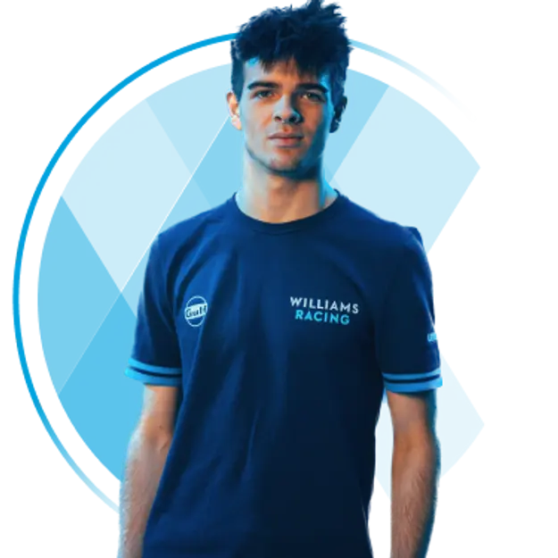

ART Grand Prix

ART Grand Prix (All Road Team) es una escudería francesa de monoplazas fundada por Frédéric
Vasseur y Nicolas Todt en 2005. Actualmente compite en diferentes categorías del deporte motor
entre las cuales están la Fórmula 2, Fórmula 3, F1 Academy y Fórmula Regional Europea, siendo
una de las escuderías más ganadoras.
Esperando ser anunciado. - Aún no se sabe quien sera el piloto 1 de este equipo.
| País de procedencia | - |
| Fecha de nacimiento | - |

Zak O'Sullivan - Es un piloto de automovilismo británico de ascendencia
irlandesa. Fue subcampeón del Campeonato de F4 Británica y campeón del Campeonato GB3
respectivamente. Es miembro de la Academia de pilotos de Williams desde 2022, resultando
subcampeón en el Campeonato de Fórmula 3 de la FIA de 2023 con Prema Racing.
Pilota con el número 2.
| País de procedencia | Reino Unido |
| Fecha de nacimiento | 06/02/2005 |